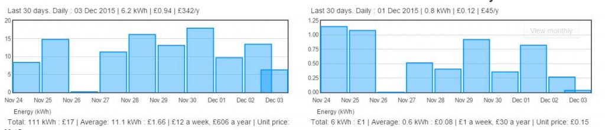
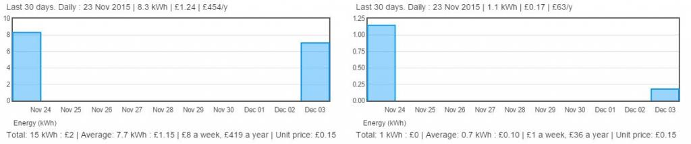

Hi
I’ve something a bit strange going on with zoom charts and I like to know if anyone has seen in before or may know what cursing it
Form midnight until noon the following day the charts display normal see image AM

But after 12pm the charts go a bit odd only showing the first and last day see image PM

Then at midnight they go back to normal and ides?
Im running an emonpi from SD card and emoncms 9.2
Thanks Steve
Update at 2:30 pm and now they look like this :)

Re: Strange Zoom Charts
Yeah I have the same. Sometimes I have everyhting available and then suddenly it shows only the half or even less of the data. Arjen maybe has found some issues and resolution there... Need to test it when I'm home....
Here's the link to the other thread: http://openenergymonitor.org/emon/node/11720